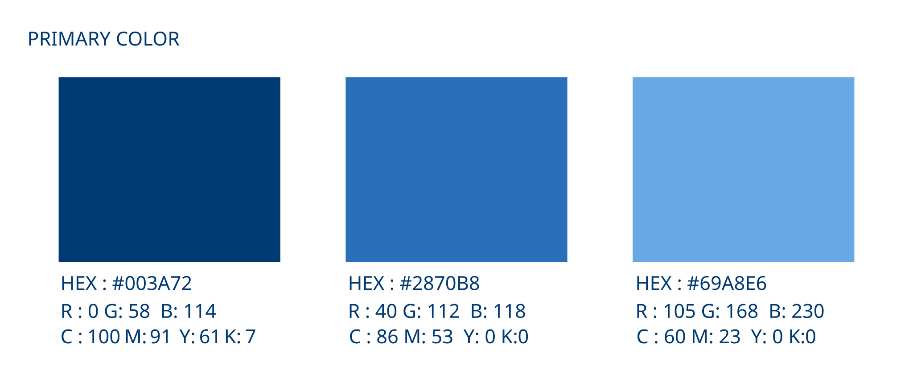
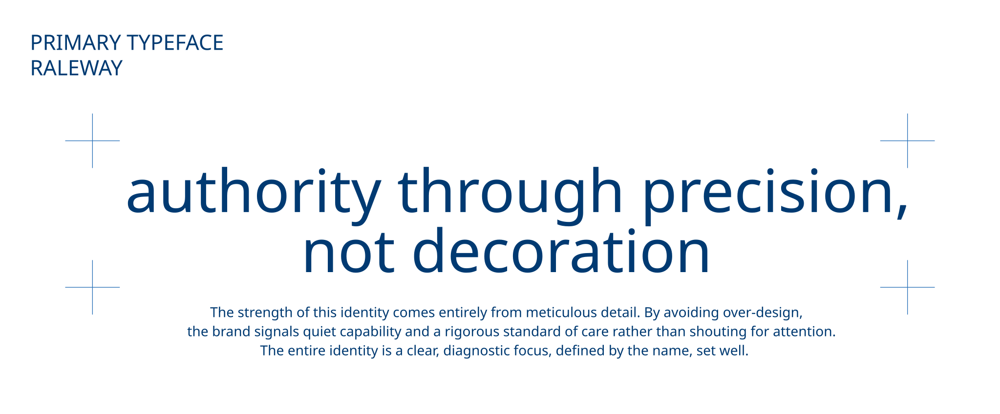
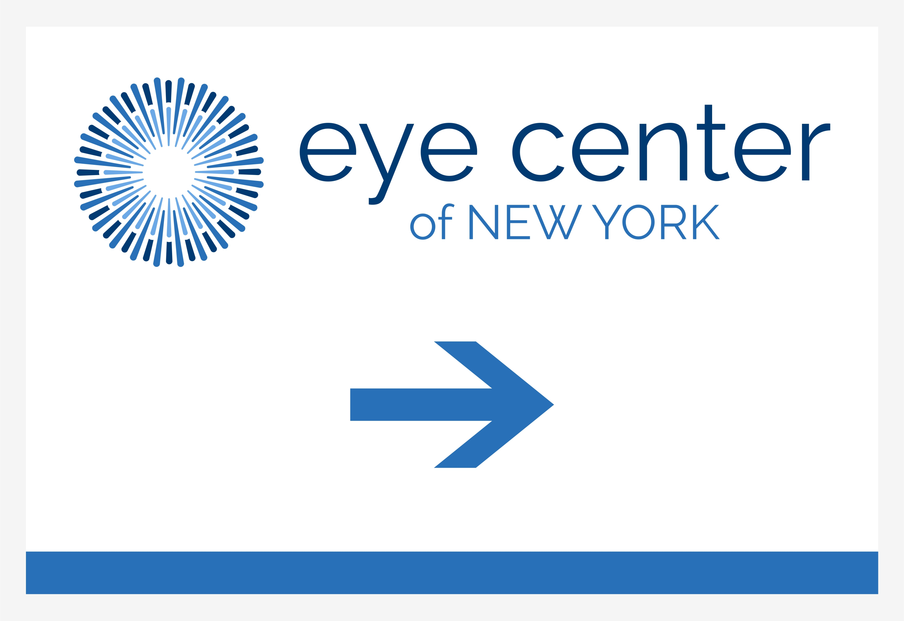
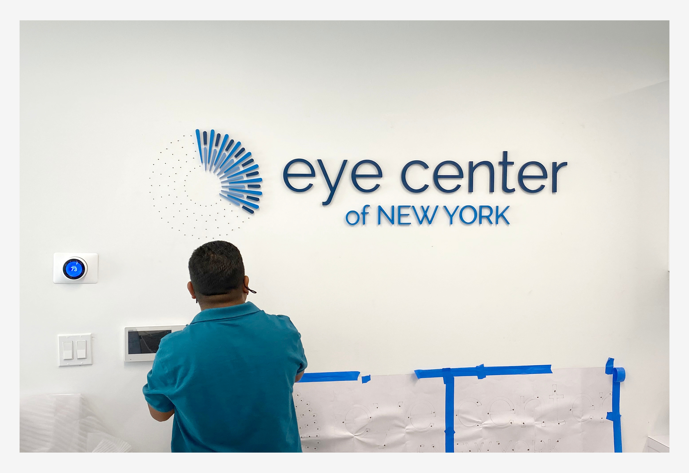
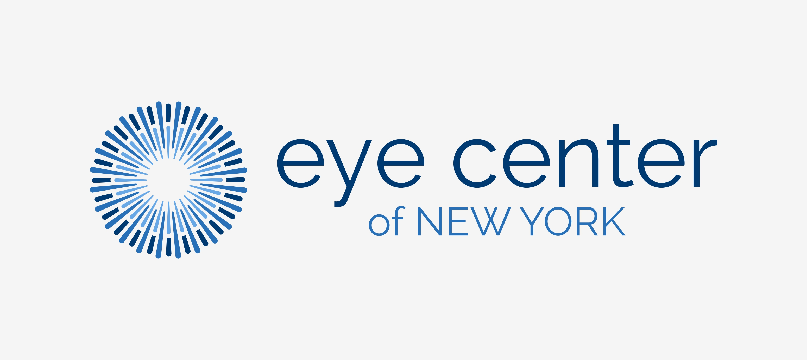
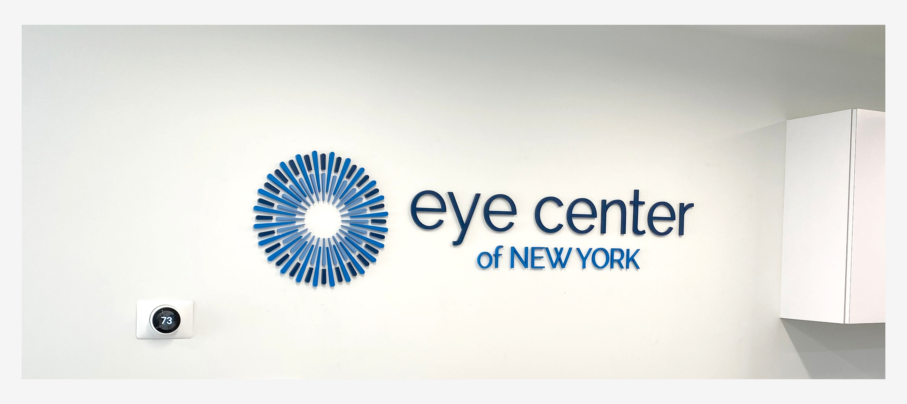
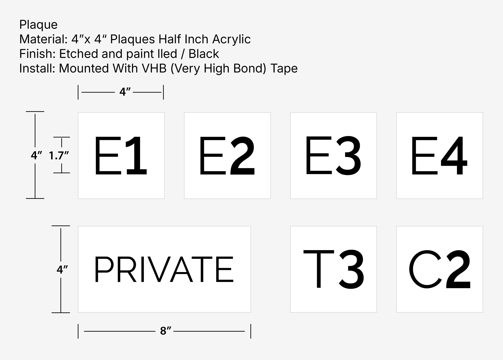
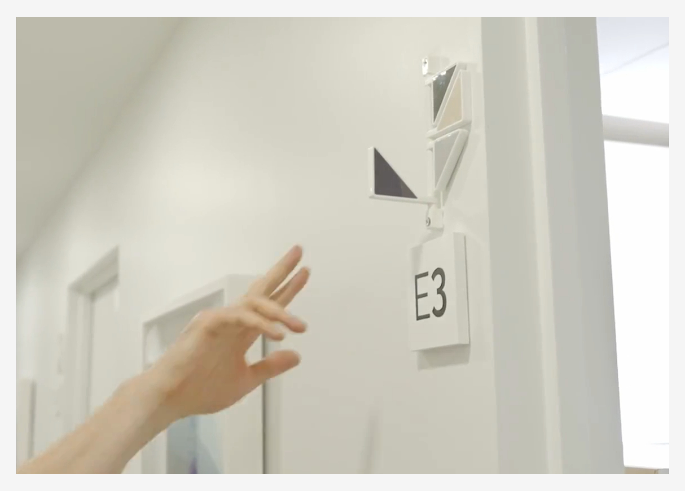
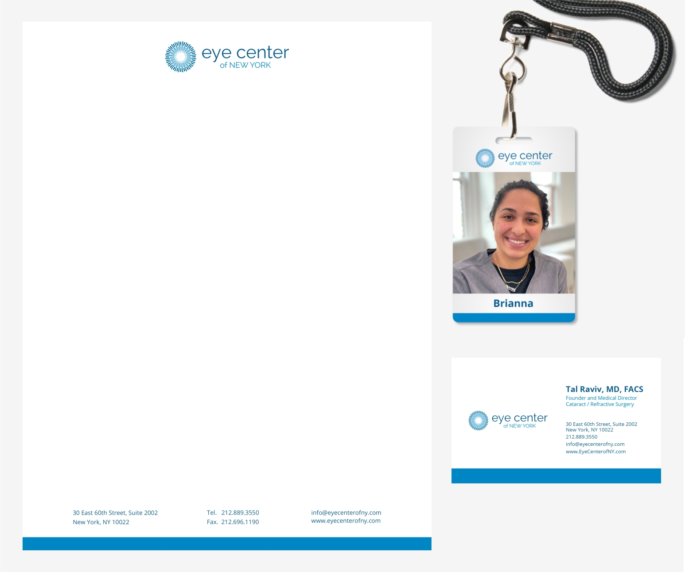
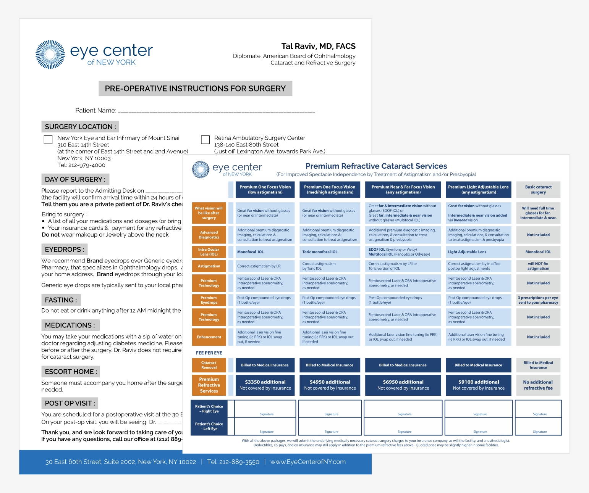

01 — Case Study
Eye Center of New York
Brand Identity & Visual Communications
Developed a visual identity and supporting communication materials across corporate stationery, operational forms, signage, and environmental graphics.

Project Facts
- Industry: Ophthalmology / Healthcare
- Role: Graphic & Brand Designer
- Tools: CorelDRAW, Adobe Illustrator, Adobe InDesign, Adobe Photoshop
- Scope: Brand Identity & Visual Communications
Responsibilities
- Logo Design
- Corporate Stationery
- Employee ID Card
- Operational Forms
- Indoor & Outdoor Signage
Selected Work
Selected applications of the Eye Center of New York visual identity across print, forms, and signage.
Logo Design
Designed a modern, scalable logo system that establishes a professional brand presence and provides a consistent visual foundation across the company's website and digital communications.


Signage Design
Designed a cohesive signage system for indoor and outdoor environments, extending the visual identity across entrances, interior spaces, and room signage while maintaining clear and consistent wayfinding.






Corporate & Operational Materials
Extended the visual identity across corporate stationery, employee identification, and operational forms, creating a consistent visual system for both internal and patient-facing communication.

